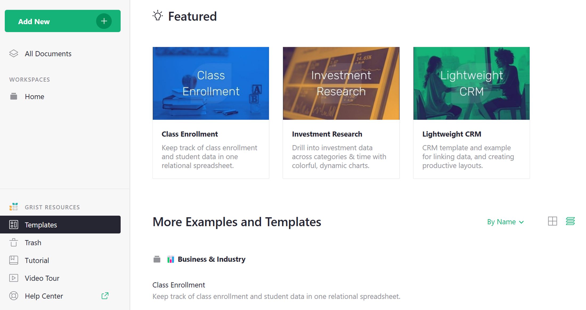
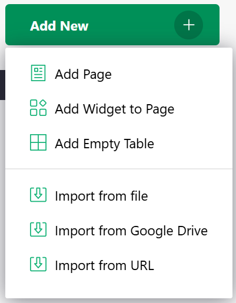

Creating a document#
To get started with Grist you’ll first need to create a document. Each document can store different kinds of data, so think of it as a collection of related data.
You can start from scratch or import existing data. Click the “Add New” button on the home screen and choose either “Create empty document” or “Import document”.
You can import spreadsheets in Excel format, as well as comma-separated value files or CSVs. If you import a spreadsheet that has multiple tabs, each tab will become a separate table in Grist.
Examples and templates#
The “Examples & Templates” list on the Grist homepage includes a number of Grist documents that demonstrate Grist features and use cases. These are always accessible via a link on the bottom left of the home page.

For each example, there is a corresponding How-To Tutorial in the Grist Help Center, which describes how to use it or how to build such a document from scratch.
You can open any of the examples in view-only mode, or click “Make own copy” and select “Copy full document” to get an editable copy.
You can also use any of the examples as a template for a new document, whch will include the structure, layout, and formulas of the example, but none of the sample data. Simply Click “Make own copy” and select “Copy as template”.
Importing more data#
Once you’ve created a document, you can import more data into it by opening the document and selecting “Add New” and then one of the Import options.

You can read more about importing data at Importing more data.